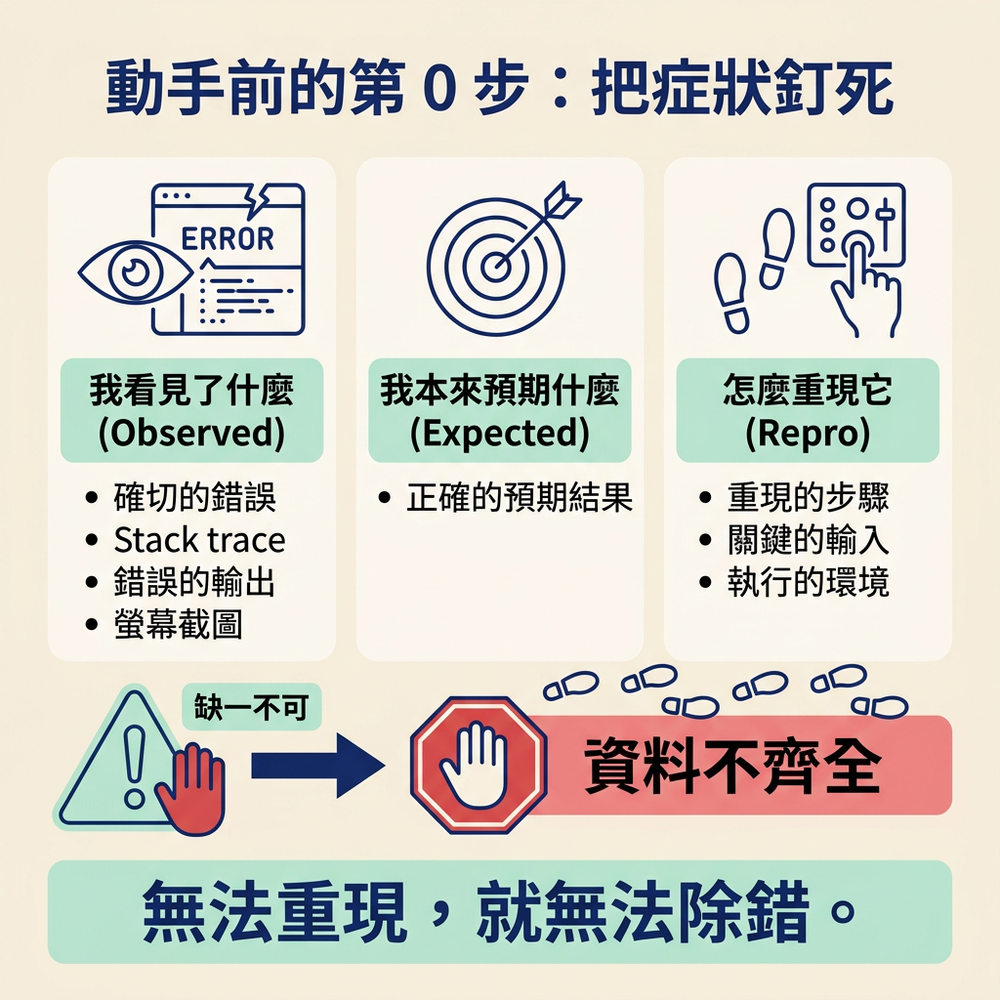
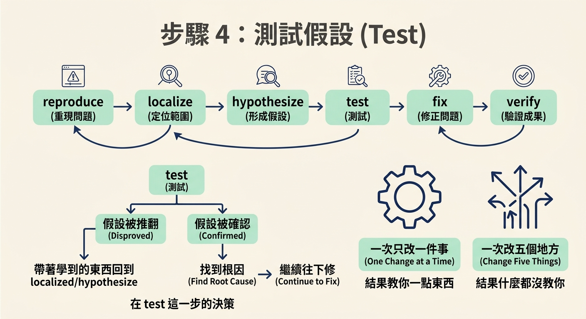
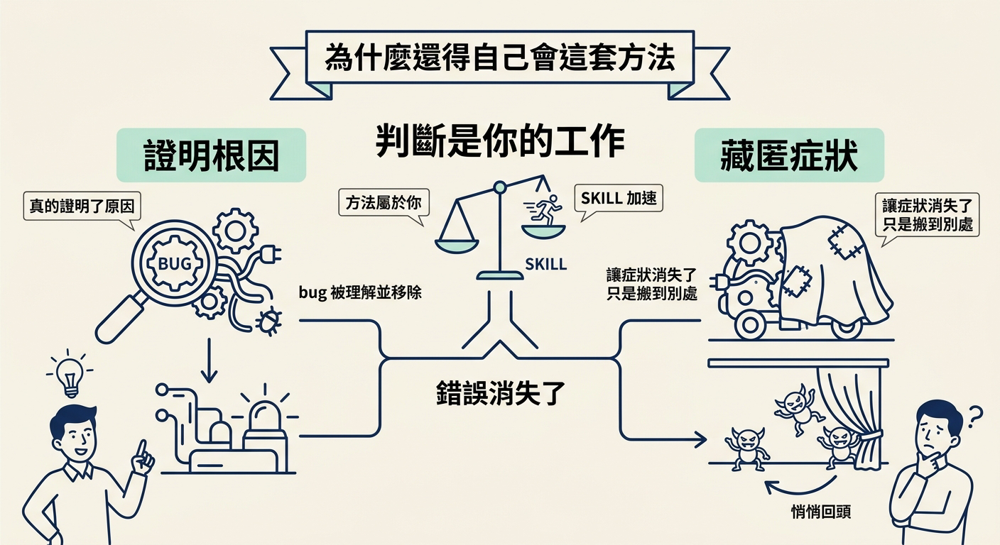

對一個可重現的一般 code bug 套用 observe → hypothesize → test，一次只改一件事，讓證據決定下一步，而不是改到錯誤消失為止。
上一節的分流如果把你帶到「一般 code bug」，也就是一個穩定、可重現、誰寫都一樣的錯誤，那麼接下來就有一套固定的走法。這套方法在任何語言、任何 codebase 都成立，不管那段 code 是你、同事，還是 agent 寫的。
動手之前你需要兩樣東西：一個能穩定重現的錯誤，還有一點「不清楚就先別猜」的耐心。做完之後你會得到三樣東西：一個你能用一句話說清楚的根因、一個小到可以指著它看的修復，還有一個之後能防止它悄悄回頭的回歸測試。
除錯不是「一直改東西，改到錯誤消失為止」。這件事每個人都會做，也正是 bug 會回來的原因——因為你從來沒有真的知道它錯在哪，只是暫時讓它碰不到你而已。
那它是什麼？它是把科學方法套在一個壞掉的程式上：你觀察失敗、形成一個具體的解釋、測試它，然後讓證據告訴你下一步該做什麼。
Resist shotgun changing several things at once.
在碰任何 code 之前，先把三件事寫清楚。這是後面所有步驟的地基：如果連「什麼叫壞」都說不清楚，你根本無法判斷自己有沒有修好。
Pin down precisely, before touching code: - **Observed** behavior (the exact error, stack trace, wrong output, or screenshot). - **Expected** behavior. - **Repro**: the steps, inputs, and environment that trigger it. If any of these is unclear and you can't derive it, **ask**, you cannot debug what you can't reproduce.
這三行是：你看見了什麼（Observed）、你本來預期什麼（Expected）、以及怎麼重現它（Repro）。三者缺一，就先補齊，再往下走。

核心流程就是六個步驟，一輪一輪地跑，直到假設被證據確認。
目標是拿到一個決定性的重現——一個失敗的測試、一行指令、一個請求，能在你要它壞的時候就壞。如果錯誤是偶發的，就想辦法找出讓它變確定的條件（時序、順序、資料、並行）。
Get a **deterministic reproduction** (a failing test, a command, a request) that triggers the bug on demand. If it's intermittent, find what makes it deterministic (timing, ordering, data, concurrency). A bug you can't reproduce on command, you can't prove you've fixed. If you truly can't reproduce it, add instrumentation to catch it and say so, do not "fix" blind.
注意最後一句：如果怎樣都重現不出來，正確做法是加 instrumentation 去抓它，而不是「盲修」。一個你無法隨傳隨到的 bug，你無法證明自己修好了它。
在開始猜原因之前，先把失敗縮到最小的範圍。做法有三種，可以混著用：
Narrow the failure to the smallest possible surface before theorizing: - **Bisect the code path**: binary search where good input becomes bad output (logging/print at midpoints, breakpoints, or commenting out). - **Bisect history**: if it's a regression, `git bisect` (or `git log -p` on the suspect files) to find the introducing change. - **Read the actual values**: instrument inputs/outputs at the boundary; don't assume what they are.
三種分別是：對程式路徑做二分搜尋，找出好輸入在哪裡變成壞輸出；如果這是後來才壞的，用 git bisect 找出是哪個改動引進的；以及，別用猜的——把邊界上的實際輸入輸出印出來看。
寫下一個單一、具體、可被推翻的假設。要抓的是根因，不是症狀：
State a single, specific, falsifiable hypothesis for the root cause, e.g. "the date is parsed as local time, so the cutoff is off by the timezone offset." Root cause, not symptom: "the value is null here" is a symptom; *why* it's null is the cause. Resist shotgun changing several things at once.
「這裡的值是 null」是症狀，不是原因；為什麼它是 null 才是原因。把兩者分清楚，你的假設才有辦法被測試。下面兩個句子就是很好的對照：
"the value is null here" ← 這是症狀，測不出東西
"the date is parsed as local time, so the cutoff is off by the timezone offset." ← 這是根因，可以被測試
設計一個最小的實驗，去確認或推翻這個假設——一個針對性的 log、一個 assertion、一行改動、或一個單元測試，然後跑它。
Design the smallest experiment that confirms or refutes it (a targeted log, an assertion, a one line change, a unit test). Run it. - **Refuted** → discard it, return to Step 2/3 with what you learned. Do not keep a change that didn't help. - **Confirmed** → you've found the root cause. Proceed.
這裡有兩條分支，要分清楚走：
這一步就是整套方法的心臟。它逼你「一次只改一件事」，因為這樣每一個結果都還會教你一點東西。反過來，如果你一次改五個地方，就算錯誤消失了，你也永遠不知道是哪一個起了作用——那個結果等於什麼都沒教你。

做那個最小、最針對性的改動，只針對已經被證明的原因。
Make the **minimal, targeted** change that addresses the proven cause. Don't fix the symptom (clamping the null), fix the cause (why it's null). Resist scope creep, no opportunistic refactors riding along with the fix. Follow the project's conventions (`AGENTS.md`, neighbouring code).
不要用「把 null 夾住」這種方式去修症狀，要去修「它為什麼是 null」。同時忍住衝動，不要順手做大掃除式的重構——那些改動會混進這次修復，讓你之後分不清楚哪一行才是真正的解。
修完還沒結束。要走完這幾件事，才算真的收乾淨：
- Run the Step 1 reproduction again, confirm it now passes. - Run the surrounding test suite, confirm no regression. - **Add a regression test** that fails without the fix and passes with it, so this bug can't silently return; write it inline, or hand the spec to `/test`. - **Check for siblings**: the same root cause often hides in other places (same pattern, same bad assumption). Grep for them and note or fix them.
四個動作：重跑步驟 1 的重現、確認現在通過；跑周邊測試、確認沒有回歸；補一個回歸測試（沒有修就失敗、修了就通過）；最後檢查有沒有「同一個原因藏在別的地方」，同樣的模式、同樣的錯誤假設，常常不只出現在一處。
你可能會想：debug skill 不是可以幫我跑完這一整輪嗎？可以，而且它重現、定位、測試、修復、保護的速度比你快。
但它有一件事做不到：判斷這次到底是「真的證明了原因」，還是只「讓症狀消失了」。這個判斷是你的工作。而且如果你自己不懂這套方法，你就做不出這個判斷。方法屬於你，skill 只是更快套用它的方式。

除錯不是「改到錯誤消失」，那是所有人都會做、也正是 bug 會回來的原因。對一般 code bug，方法是把科學方法套在壞掉的程式上：先釘死觀察、預期、重現三件事，然後跑 reproduce → localize → hypothesize → test → fix → verify 這六步。最重要的習慣是一次只改一件事，讓每個結果都教你一點東西；假設被推翻就丟掉它、帶走學到的東西再來一次，被確認才動手修。skill 能幫你跑得更快，但「是否真的證明根因」這個判斷，永遠是你的。
方法在你手上了。下一節要把它落到實際操作：跑一次 debug skill，看它怎麼問你開場的三件事、你該盯著它一次只下一個假設，以及為什麼「修得夠小」是它真的找到根因的訊號。